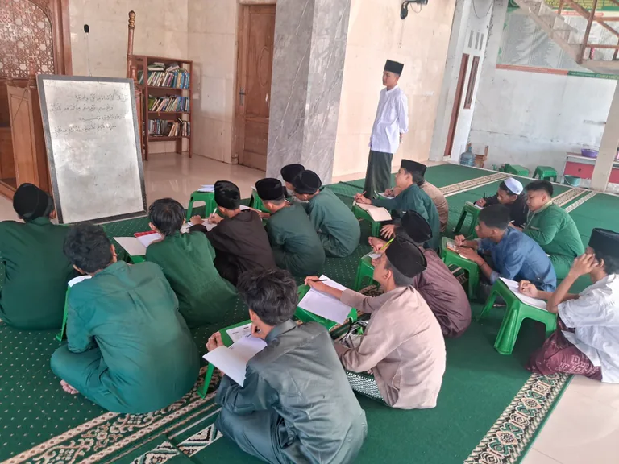
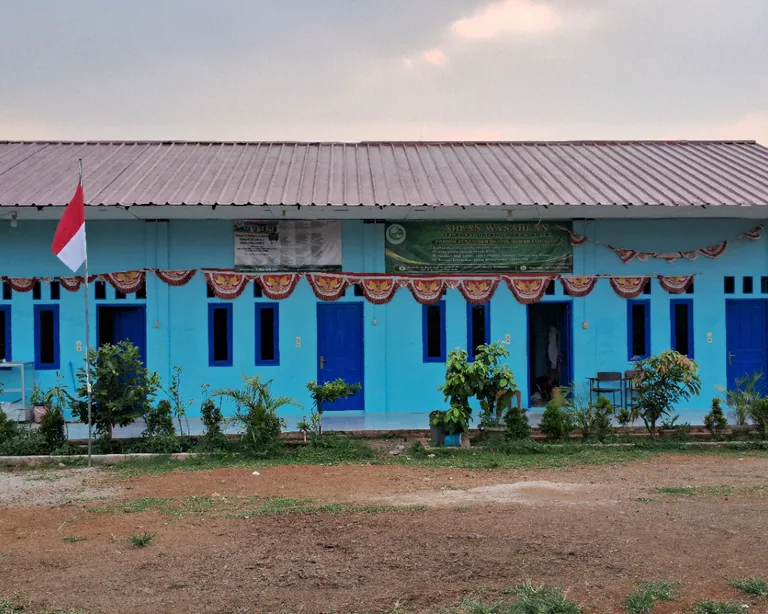
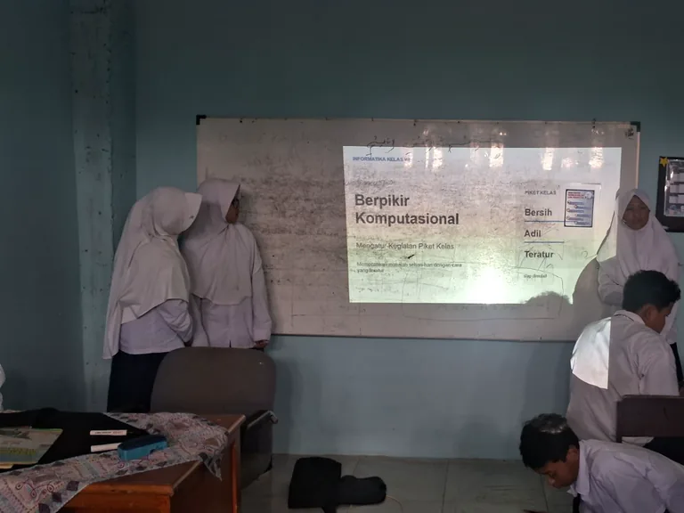
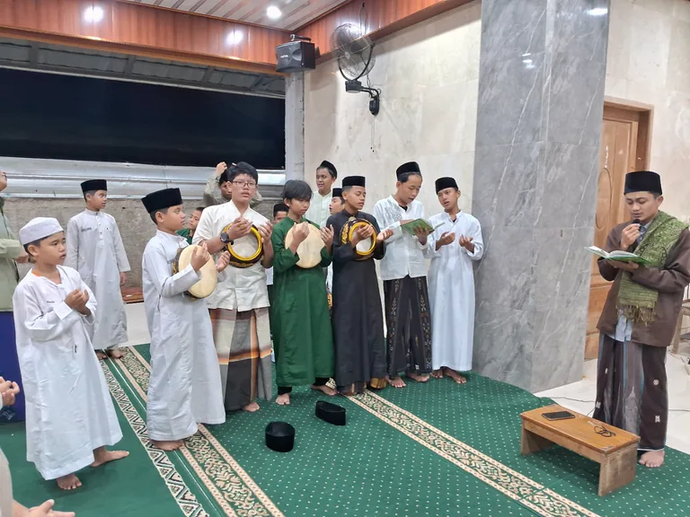
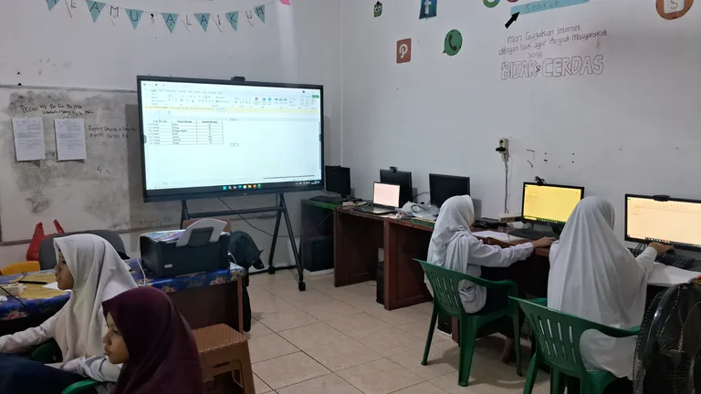
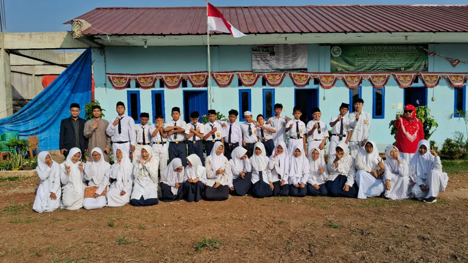
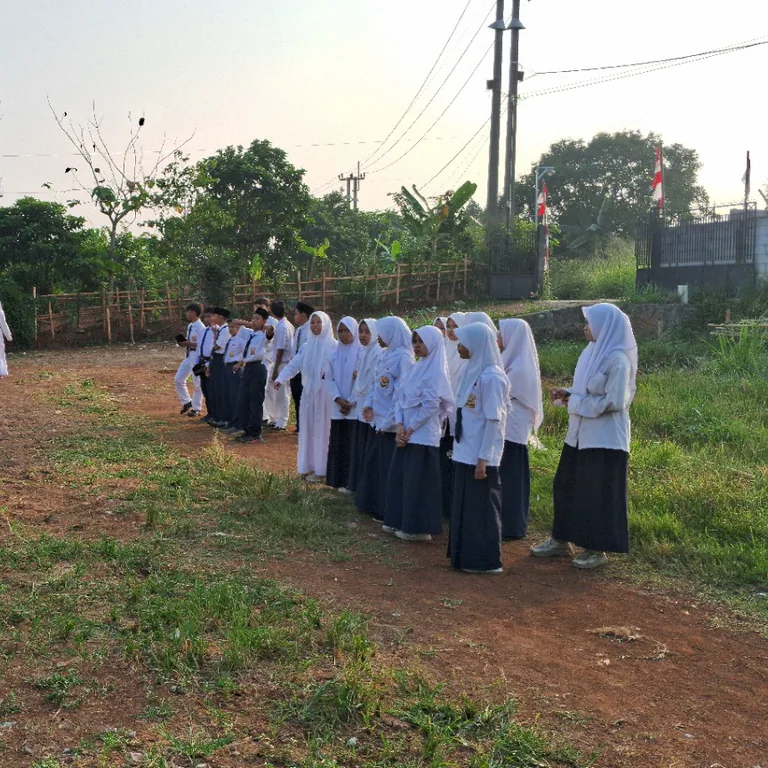
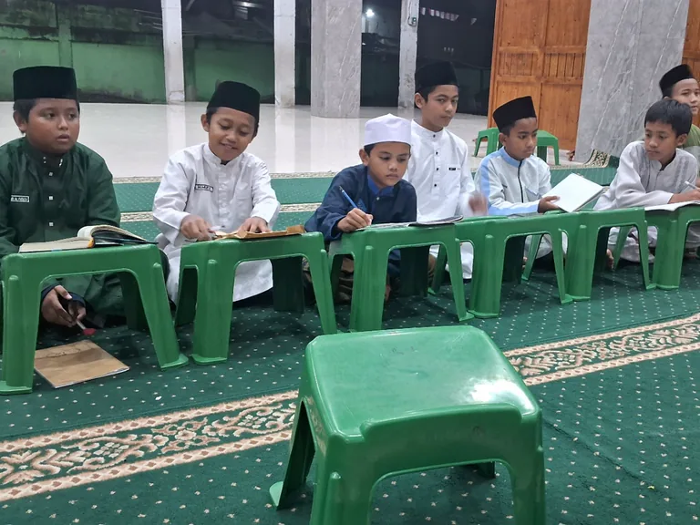
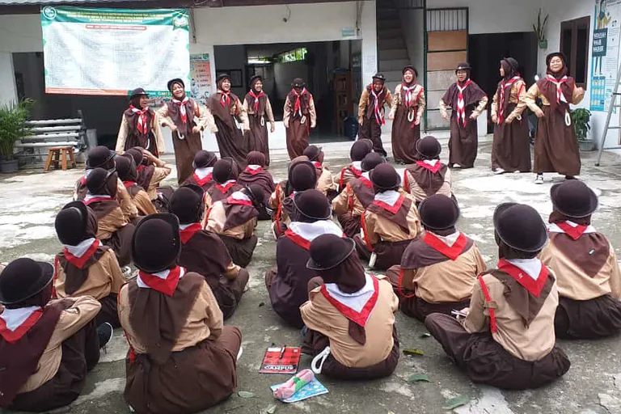

Al-Qur'an & Tahfizh
Santri dibimbing untuk membangun kedekatan dengan Al-Qur'an melalui hafalan, murojaah, pembiasaan ibadah, dan adab belajar yang terjaga.
Al-Qur'an • Adab • Ilmu • Teknologi
Membangun Generasi Qurani dan Melek Teknologi
SMP Tahfizh Quran Fantastis menghadirkan pendidikan menengah berbasis pondok pesantren yang memadukan tahfizh Al-Qur'an, pembelajaran akademik, dan pembinaan karakter dalam lingkungan belajar yang terarah, hangat, dan bertumbuh.

Berbasis pondok pesantren
Fokus pada tahfizh dan adab
Pembelajaran akademik yang terarah
Penguatan karakter dan kemandirian
Profil Sekolah
SMP Tahfizh Quran Fantastis adalah sekolah menengah berbasis pondok pesantren yang tumbuh untuk membantu siswa belajar, menghafal Al-Qur'an, dan berkembang sebagai pribadi yang berilmu, beradab, dan siap menghadapi masa depan.
Selengkapnya
Lingkungan pesantren
yang membentuk karakter
Tiga Pilar Pendidikan
Pendidikan di SMP Tahfizh Quran Fantastis dibangun di atas tiga pilar utama yang saling melengkapi: Al-Qur'an dan tahfizh, pembelajaran akademik, serta pengembangan siswa.
Lihat Pendekatan Kami
Santri dibimbing untuk membangun kedekatan dengan Al-Qur'an melalui hafalan, murojaah, pembiasaan ibadah, dan adab belajar yang terjaga.

Siswa mengikuti pembelajaran akademik yang membantu mereka memahami ilmu pengetahuan, memperkuat literasi, dan bertumbuh secara intelektual dengan pendampingan yang terarah.

Berbagai kegiatan harian dan kebersamaan di lingkungan pesantren membantu siswa belajar disiplin, tanggung jawab, kepemimpinan, kerja sama, dan kemandirian.
Keunggulan

Kami percaya bahwa pendidikan Islam yang kuat tidak harus menjauh dari perkembangan zaman. Karena itu, SMP Tahfizh Quran Fantastis menghadirkan pendekatan belajar yang menumbuhkan generasi Qurani sekaligus melek teknologi.
Melalui pengenalan perangkat digital, pembelajaran yang terarah, dan budaya belajar yang bertanggung jawab, siswa dibimbing agar mampu memanfaatkan teknologi sebagai sarana belajar, berpikir, dan berkarya dengan nilai-nilai yang tetap terjaga.
Capaian Tahfizh
Setiap setoran adalah bagian dari perjalanan santri bersama Al-Qur'an.
Kenali Sekolah230+
Juz hafalan yang telah disetorkan santri secara kumulatif
Capaian ini menjadi salah satu bukti kesungguhan pembinaan tahfizh di lingkungan Pondok Pesantren Daarul Quran Fantastis. Kehadiran data ini dimaksudkan sebagai penguat kepercayaan, sekaligus inspirasi bagi santri yang sedang menempuh proses hafalan.
Keseharian
Belajar di sini bukan hanya berlangsung di ruang kelas. Keseharian santri dibentuk melalui ibadah, belajar bersama, kebersamaan, disiplin, dan aktivitas yang membantu mereka bertumbuh menjadi pribadi yang lebih mandiri.




PPDB
Bersama wujudkan generasi Qurani
Bagi orang tua dan calon siswa yang ingin mengenal lebih dekat SMP Tahfizh Quran Fantastis, kami siap membantu melalui informasi pendaftaran, alur masuk, dan penjelasan program sekolah.
Silakan hubungi kami untuk memperoleh informasi lebih lanjut mengenai PPDB dan proses pendaftaran.